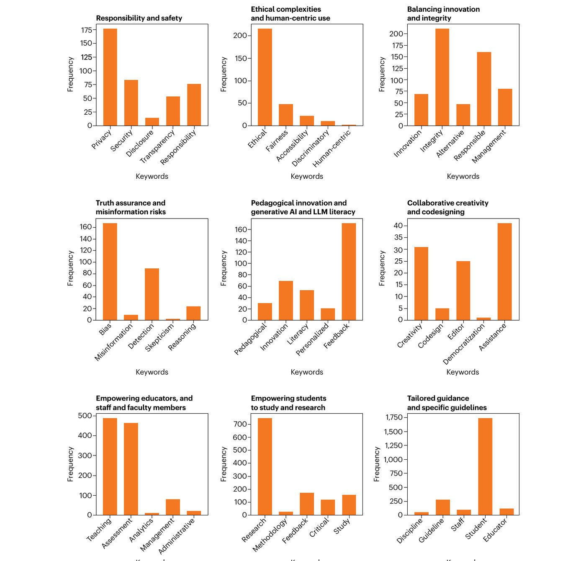
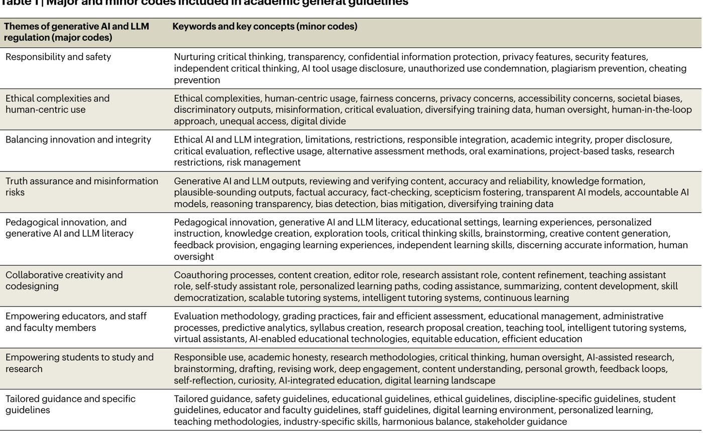
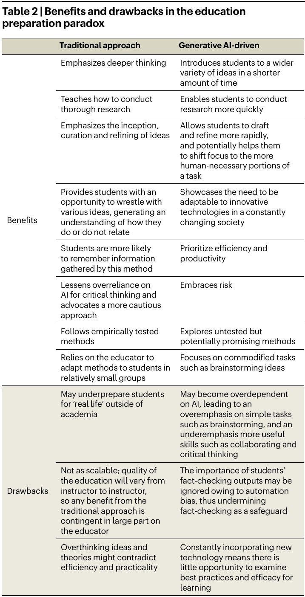
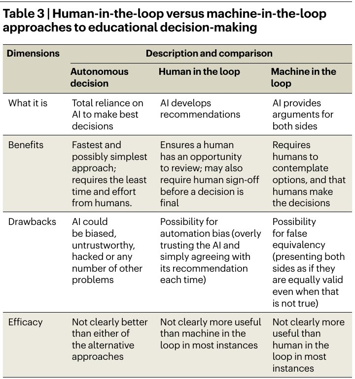
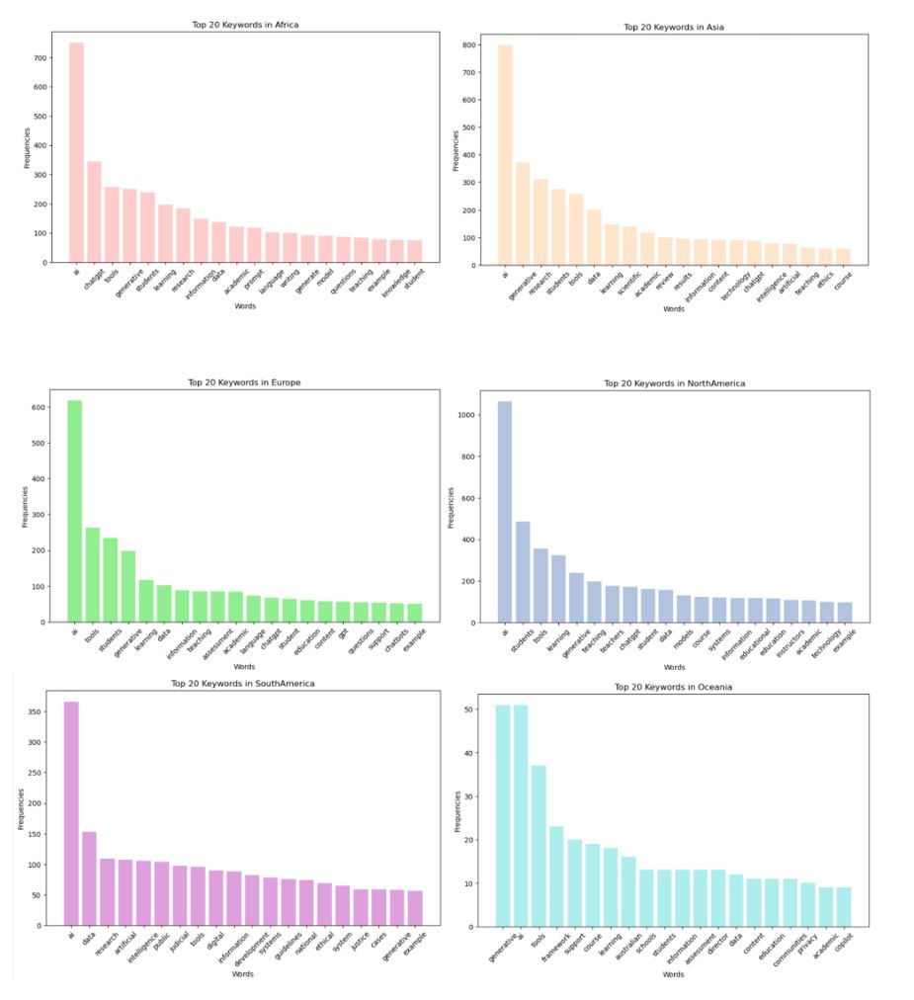
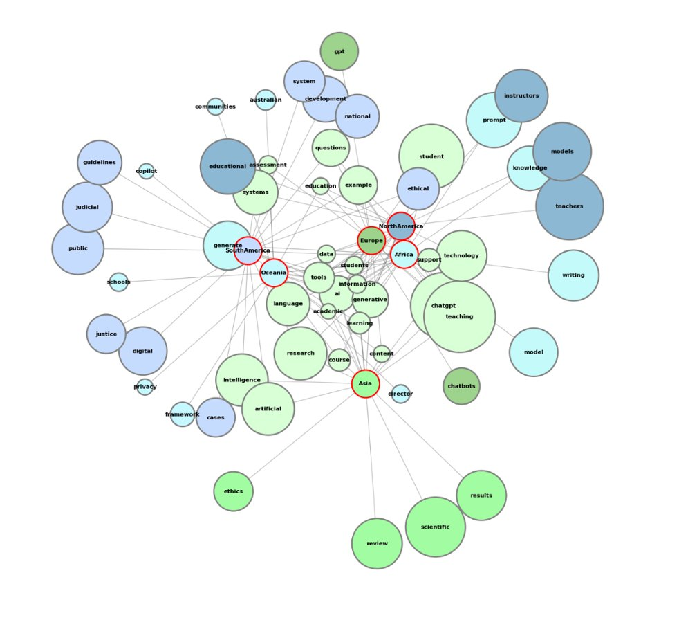

Generative AI brings real benefits to academia, from wider access to new forms of collaboration, along with risks such as misinformation and threats to academic integrity. Universities have responded with very different guidance. We built AGGA (Academic Guidelines for Generative AIs), a dataset of 80 university guidelines from 28 countries on six continents, and analyzed it with text mining and qualitative coding. The guidelines group into nine major themes, from responsibility and safety to empowering students and educators, and the analysis points to where guidance is strong and where it is missing.
Highlights
“Privacy” appears 177 times and “ethical” 216 times, but “disclosure” only 14, “misinformation” 9, “human-centric” 2 and “democratization” once: clear blind spots.
Student-focused guidance dominates (about 1,750 mentions of “student”), while guidance for educators, management and specific disciplines is far less frequent.
Educators face a paradox: banning LLMs may protect deep thinking, while embracing them prepares students for an AI-rich workplace (Table 2).
“Human in the loop” is often assumed to help but its effects are unclear; we recommend evaluative AI that argues for and against decisions, plus training to counter automation bias (Table 3).
Recommendations: teach AI literacy, assign tasks that critique AI output, combine traditional and AI-driven methods, standardize baseline policies with room for discipline-specific rules, and limit AI grading to low-stakes work.
Results

Fig. 1 of the paper: frequency of key concepts in the nine major themes found across the 80 guidelines.

Table 1: the nine major themes (major codes) and their keywords and key concepts (minor codes).AGGA guidelines by continent (n = 80, from the AGGA dataset).

Table 2: benefits and drawbacks of traditional vs. generative-AI-driven approaches in the education preparation paradox.

Table 3: autonomous decisions vs. human-in-the-loop vs. machine-in-the-loop approaches to educational decision-making.

Top 20 keywords in the guidelines of each continent (from the AGGA notebook).

Keyword network: how continents connect to the concepts their guidelines emphasize (from the AGGA notebook).
How it works
Guideline documents collected from top-ranked and diverse public and private universities.
Raw documents converted to text, cleaned, tokenized and lemmatized by continent.
Keyword frequency analysis and network graphs of continent–concept links.
Qualitative coding into nine themes, from responsibility and safety to tailored guidance.
Jiao, J., Afroogh, S., Chen, K., Atkinson, D., & Dhurandhar, A. (2025). The global landscape of academic guidelines for generative AI and LLMs. Nature Human Behaviour, 9(4), 638–642.